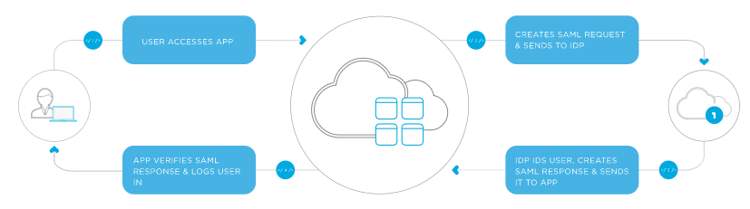

What is Single-sign-on
什么是Single sign on？
Single-sign-on是一个很方便的东西，现在无论什么网站都需要登陆，而记住每个网站不同的用户名和密码又非常困难，那么作为一个好的产品，从用户的角度出发，就应该想到，如果我们只需要让用户登陆一次，就可以去到同一个平台下任何其他的产品，而不需要重复登陆，那该多好。
比如说Google Chrome，当你在浏览器中登陆了，那么你再去到Youtube或者Gmail等其他Google公司的产品，你将不再需要再次登陆。这是因为Google在你登陆的时候保存了
那么，这是怎么做到的呢，在single sign on with SAML的世界中，有两个非常重要的概念，一个是IDP，identity provider，另一个是SP，service provider。我们还是拿Google来举例子，当你需要登陆Youtube时，Youtube会将你跳转到一个Google登陆界面，登陆后他会保存你的登陆信息，然后再将你跳转回Youtube，你就发现你已经登陆上了，这时你需要查看Gmail，Gmail也会将你跳转到Google登陆界面，但是界面发现因为你已经登陆了Youtube，所以你所有的登陆信息已经被保存了，不需要你再次输入，于是自动把你跳转到Gmail，你就以为你什么都没做就自动登陆了Gmail。(虽然Google可能不是用SAML来登陆的)
什么是SAML?
SAML可以认为是IDP和SP之间转递用户信息的一种格式规范，为了方便接收方能够理解传递过去的信息，必须规定一种规范使接收方很容易解码信息。
中间人
现在我们要做的是一个中间人的角色，用户所有的请求都会先到我们这里，我们会检查request header，如果我们发现这是一个GET request，我们就会直接把用户跳转到SSO的登陆界面。
如果我们发现这是一个POST request，并且成功解码了一起发过来的SAML，我们就要重新加密用户信息，并把用户跳转到相应的网页，由最终的Service provider来再次解码用户信息。
如果SAML解码失败，我们也会将用户跳转到SSO登陆界面。让用户再次登陆
加密信息的方法有很多，我用的是windows自带的RijndaelManaged Class
本节参考了这些文章，可以点击以获取更多信息。